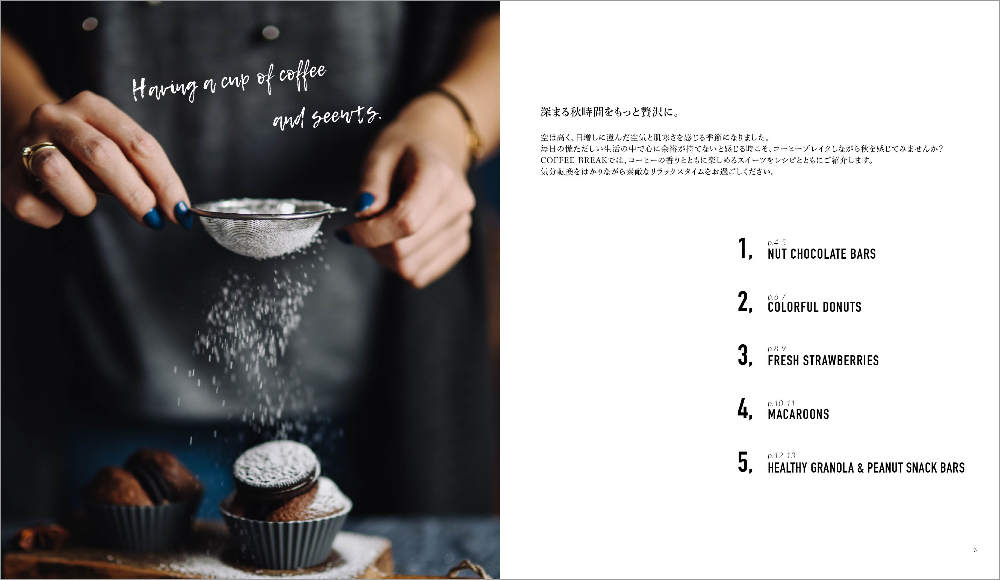
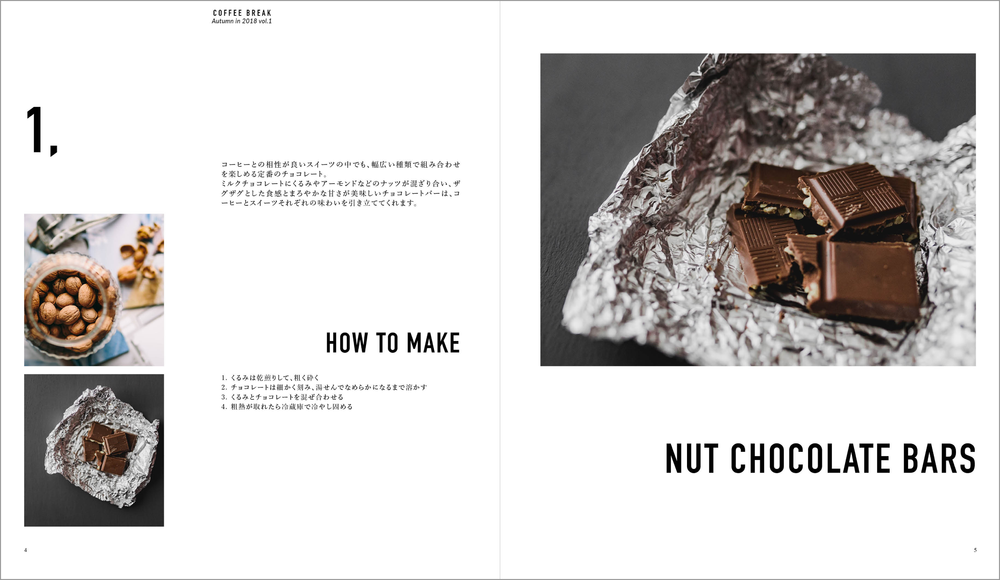
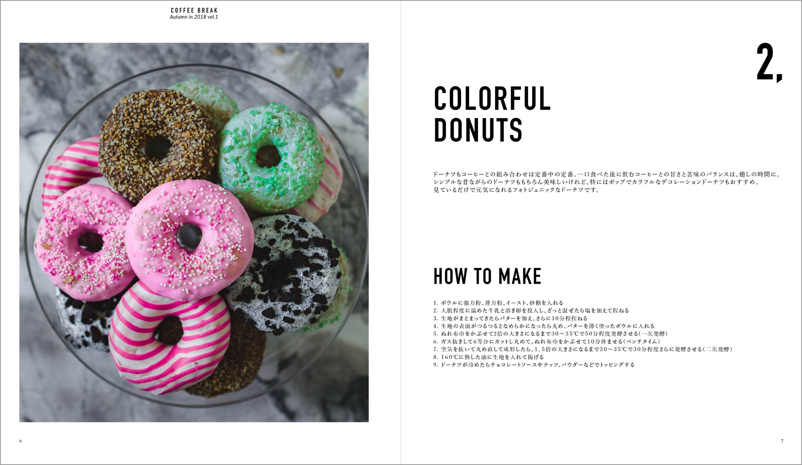
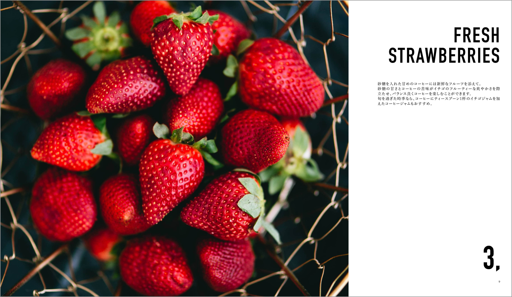
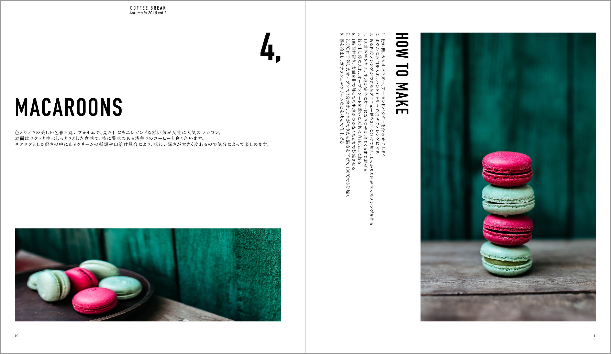
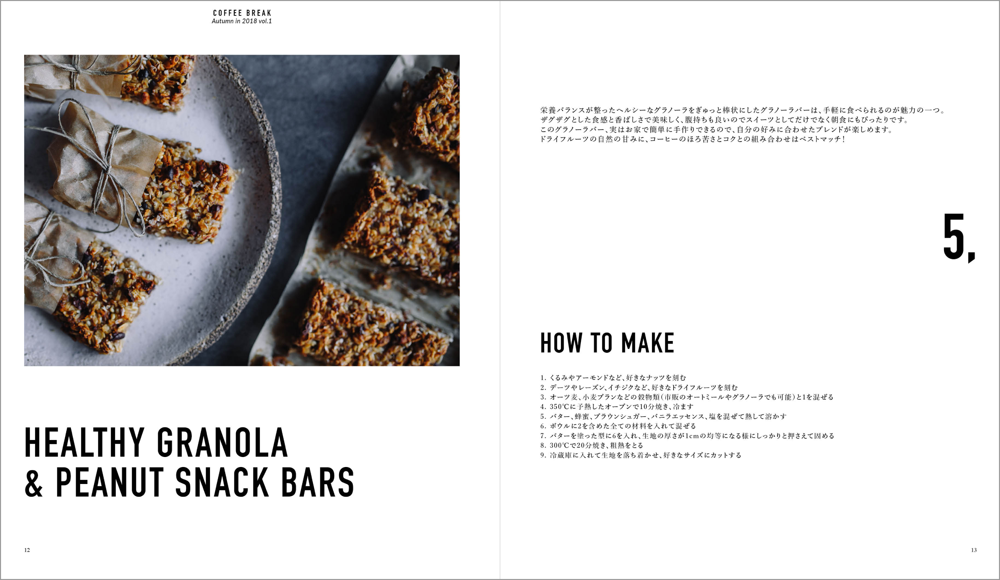
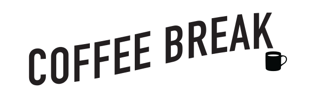

Graphic
リトルプレス『COFFEE BREAK』
「コーヒーとスイーツをテーマにした冊子を作る」という設定で、Adobe InDesignを用いたリトルプレス制作に取り組みました。






この作品について
Project
リトルプレス『COFFEE BREAK』

Tool
Adobe InDesign / Illustrator / Photoshop
Design Concept
全ページで写真を大胆に配置しながら余白をしっかりと取ることを共通にし、レイアウトはページごとに変化を持たせたデザインに仕上げました。